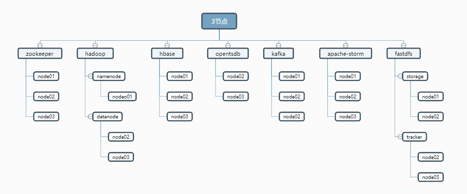

快速部署¶
这里先简单说明下，最近有很多同事在部署的时候遇到了各种各样的问题，很多都是一些文档不仔细/网络不给力/修改了不改修改的配置导致的，所以专门提供了快速部署，让各位小伙伴们进行快速部署芒果系统的相关环境。
注意
此部署为分布式脚本部署
此部署文档可在线上使用
快速部署体验版本为：Beta1.0.1
快速部署和分布式手动部署稍有不同，默认提供脚本批量执行，供快速上手
项目使用针对技术爱好者强烈推荐分布式手动部署，更快的熟悉每个模块的功能，便于后续排错 分布式手动部署文档
建议配置
标配6台：三台用于时序数据采集和存储，另外三台用于微服务应用部署和结构数据存储。
系统： CentOS7+
CPU： 8Core+
内存： 16G+
磁盘： >=100GB+
计算参考:100个测点1分钟采集一次，年存储空间消耗30GB。
下面为三节点数据采集应用分布： 
适配系统
测试兼容阿里云CentOS7+
测试兼容华为云CentOS7+
测试兼容腾讯云CentOS7+
其余平台/系统没有进行多测试
优化系统
如果你的系统是新的，我们建议你先优化下系统，此步非必须，同样我们也提供了优化系统脚本
以下基础环境中，若你的系统中已经存在可跳过，直接配置，建议使用我们推荐的版本
快速开始
此安装脚本包含以下软件
install.sh [ zookeeper, hadoop, hbase, opentsdb, kafka, storm, fastdfs ]
install-other.sh [ mysql, mongodb, emqtt, node, redis, tomcat, hazelcase, mysqlbackup ]
#克隆工程脚本，赋权执行即可，执行的时候将你的内网IP当作参数传进来
yum install -y git
git clone https://github.com/bigdatasafe/mg-base-install.git
cd mg-base-install
修改conf.cfg配置文件(node01执行)
选择配置文件模板(二选一)
\cp host-3.cfg conf.cfg # 默认为3节点无需执行，可忽略。
\cp host-5.cfg conf.cfg # 如果是5节点执行此命令否则忽略
根据实际情况修改 SERVERS,HOSTS,PASS,KEEP_VIP 变量(节点IP/节点主机名/SSH登录密码/VIP)
cat <<'EOF' >conf.cfg
# IP与主机名对应
SERVERS=(192.168.2.71 192.168.2.72 192.168.2.73 192.168.2.74 192.168.2.75)
HOSTS=(node01 node02 node03 node04 node05)
# 免密码登录账号密码
USER=root
#请修改为各节点root密码
PASS=ROOTPASS
SSH_PORT=22
# 下载的软件包路径
PACKAGE_DIR=/home/software
# 需要编译的软件解压路径
SOURCE_DIR=/usr/local/src
# 程序安装路径
SOFT_INSTALL_DIR=/home/hadoop
# 数据存储路径
DATA=/home/hadoop
# zookeeper
ZOO_SERVER='node01 node02 node03 node04 node05'
# hadoop
# namenode HA
HDP_NN1='node01'
HDP_NN2='node02'
HDP_RM1='node01'
HDP_RM2='node02'
# 安装 namenode 主机
NameNode='node01 node02'
# 安装 datanode 主机
DataNode='node03 node04 node05'
# fastdfs
# 数据存储路径
TRACKER_DIR=$DATA/fastdfs/tracker
STORAGE_DIR=$DATA/fastdfs/storage
# 配置 tracker 角色的主机
TRACKER_SERVER='node03 node04 node05'
# 配置 storage 角色的主机
STORAGE_SERVER='node01 node02'
# storage 角色主机 keepelived 配置(8888端口高可用)
# keepalived master角色
KEEP_MASTER='node02'
# keepalived VIP
KEEPLIVED=yes
KEEP_VIP=192.168.2.70
# hbase
# hbase 主节点
HBASE_MASTER='node01'
# hbase 从节点
HBASE_SLAVE='node02 node03'
# opentsdb
TSDB_SERVER='node04 node05'
# kafka
KAFKA_SERVER='node03 node04 node05'
# storm
# storm 主节点
STORM_MASTER='node01'
# storm 从节点
STORM_SLAVE='node02 node03'
#---------------------------------
# 软件版本 #
#---------------------------------
JDK_VER=8u211
ZOOKEEPER_VER=3.4.14
HADOOP_VER=2.7.7
HBASE_VER=1.2.12
OPENTSDB_VER=2.4.0
KAFKA_VER=2.12-2.2.0
STORM_VER=1.2.2
FASTDFS_VER=5.11
LIBFASTCOMMON_VER=1.0.39
NGINX_VER=1.14.2
FASTDFS_NGINX_MODULE_VER=1.20
EOF
下载软件及安装脚本推送到所有节点(node01执行)
./download.sh
download.sh 执行过程
执行download.sh
安装wget expect
配置秘钥登录所有节点
下载软件后台推送到其他节点
下载安装脚推送到其他节点
安装软件(所有节点执行)
cd /home/software && sh install.sh
install.sh 执行过程
初始化(所有节点)
设置主机名,hosts解析
优化ssh连接速度
关闭selinux,防火墙
配置YUM源(阿里云)
配置时间同步(阿里云)
根据配置文件中的变量判断当前节点需要安装的服务执行安装
执行环境初始化(node01执行)
hadoop 初始化, 执行完成后检查 hadoop 状态确认正常后再初始化 opentsdb
sh /home/software/init-hadoop.sh
确认初始化完成后删除初始化脚本
rm -f /home/software/init-hadoop.sh
opentsdb 初始化
sh /home/software/init-opentsdb.sh.sh
确认初始化完成后删除初始化脚本
rm -f /home/software/init-opentsdb.sh.sh
服务管理(仅node01有效)
mango stop # 关闭服务
mango start # 启动服服务
查看服务安装信息
sh /home/software/info.sh {ip/hosts}
安装其他服务
curl -O http://kaifa.hc-yun.com:30050/mango/mango-base-install/raw/master/install-other.sh
chmod +x install-other.sh && ./install-other.sh
----------------- 请输入编号安装相应服务 -----------------
0. Install MySql
1. Install MongoDB
2. Install Emqtt
3. Install Node
4. Install Redis
5. Install JDK
6. Install Tomcat
7. Install Hazelcast
8. MySql Backup(Rsync)
9. Exit
----------------------------------------------------------
日志路径
若这里访问有报错，请看下日志，一般都是配置错误。
日志路径：所有模块日志统一
/var/log/supervisor/